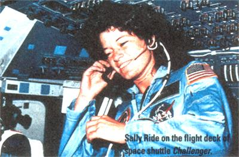
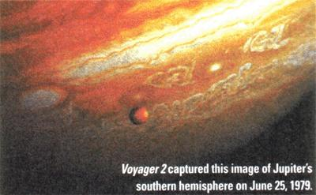

1. Statehood Day in Tennessee; Mars within 2° (about the width of your thumb at arm's length) of the star Spica from now to June 15 (look for the bright, slightly ruddy planet with the less bright star in the south as dusk ends). S
3.Corpus Christi; Coronation Day in the U.K.; Ed White made first American space walk in 1965.
4. Ten years ago today, the Tiananmen Square massacre occurred.
5. World Environment Day; Mars halts its retrograde (westward) motion relative to the background stars and resumes direct (eastward) motion.
7. LAST QUARTER MOON, 12:20 a.m. EDT
8. Tonight, Mars closest to Spica (1.7° from the star) but no conjunction in right ascension (that is, Mars doesn't pass north or south of Spica, but instead backs away from it after merely getting close to it in the sky).
10. Venus is exactly half lit in telescopes now, but probably will look so a few days earlier.
11. Venus at greatest elongation (maximum apparent separation) from the sun (45°), though not as high and late setting as it was a few weeks ago; King Kamehameha I Day in Hawaii; Queen's Official Birthday in the U.K.
12. Venus near edge of Beehive Star Cluster tonight (use binoculars or telescope).
13 NEW MOON, 3:03 p.m. EDT; temperature dropped to 2°F at Tamarack, California, in 1907.
14. Flag Day; snow and hail fell at Pasadena, California this day in 1884.
15. Earliest sunrise (5:30 a.m. daylight saving time) at 40°N; St. Vitus' Day (legend says if if it rains today, there will be 40 more days of rain! See July 15).
16 First woman in space, Valentina Tereshkova (1963); this day in 1806, a magnificent total eclipse of the sun was visible in a band of territory stretching from southern California to Massachusetts (five minutes of "totality" were seen in New England in clear skies).
17. Bunker Hill Day in Suffolk County, Massachusetts. 1$
18. Sally Ride became the first American woman in space (1983).
19. Juneteenth (in Florida, Oklahoma and Texas).
20. Fathers Day; FIRST QUARTER MOON, 2:13 p.m. EDT
21. Summer solstice, 3:49 p.m. EDT longest day of the year; sun farthest north in the heavens; West Virginia Day; in Hawaii; Queen's Official Birthday in the U.K. 12 Venus near edge of Beehive Star Cluster tonight (use binoculars or telescope). 13 NEW MOON, 3:03 p.m. EDT; temperature dropped to 2°F at Tamarack, California, in 1907. 14 Flag Day; snow and hail fell at Pasadena, California this day in 1884. 15 Earliest sunrise (5:30 a.m. daylight saving time) at 40°N; St. Vitus' Day (legend says if if it rains today, there will be 40 more days of rain! See July 15). 16 First woman in space, Valentina Tereshkova (1963); this day in 1806, a magnificent total eclipse of the sun was visible in a band of territory stretching from southern California to Massachusetts (five minutes of "totality" were seen in New England in clear skies). 17 Bunker Hill Day in Suffolk County, Massachusetts. 1$ Sally Ride became the first American woman in space (1983). 19 Juneteenth (in Florida, Oklahoma and Texas). 20 Fathers Day; FIRST QUARTER MOON, 2:13 p.m. EDT 21 Summer solstice, 3:49 p.m. EDT longest day of the year; sun farthest north in the heavens; West Virginia Day; temperature dropped to 10°F this day in 1921 in Painter, Wyoming.
22. Mercury highest at dusk this day (as seen from around 40°N latitude).
23. Midsummer's Eve; St. John's (the Baptist's) Eve; Mercury should appear exactly half lit in telescopes.
24. Midsummer's Day; St. John's Day.
28. FULL MOON (also called Strawberry Moon, Flower Moon or Rose Moon), 5:37 p.m. EDT; latest sunset (8:33 p.m. daylight saving time) at 40°N latitude; Mercury at greatest elongation (maximum apparent separation) from the sun (26°).
30. Mars and Spica separate to as much as 5' apart (about half your fist's width at arm's length) for first time since May 11; Tunguska Event mysterious explosion over Siberia this day in 1908, thought to be caused by a giant meteor or chunk of a comets nucleus (other more outrageous theories: nuclear powered alien spaceship; anti-matter; a miniature black hole).
1. Canada Day.
2. Midpoint of the year at 1 p.m. daylight saving time in your time zone.
3. Dog Days begin (according to some authorities who also say they end on August 11).
4.Independence Day; Venus within 5° of star Regulus from now until July 21.
6. LAST QUARTER MOON, 7:57 a.m. EDT Earth at aphelion, farthest from sun in space (though Northern Hemisphere is hot, as it is most tilted toward sun this time of year) at around 4 p.m. EDT; this event can occur as early as July 2 in some years; this year it's only about three hours short of happening the latest it possibly can.
8. Venus within 2° (width of your thumb seen at arm's length/ of Regulus from now through July 13.
9.Voyager2 flyby of Jupiter occurred this day 20 years ago.
10. Temperature hit 134°F in Death Valley, California, this day in 1913--all-time U.S. and Western Hemisphere high.
11. Venus nearest Regulus (a bit more than 1.2° southwest of Regulus) this evening.
12. NEW MOON, 10:24 p.m. EDT Henry David Thoreau born this day in 1817.
13. Lightning strike sets off New York City 24-hour blackout in 1977-looting leads to a $1 billion loss.
15. Spectacular moon Venus-Regulus conjunction at nightfall-don't miss it; St. Swithin's Day (legend says that if it rains today it will rain for next 40 days! See June 15 for same legend about another saint's day).
16."Trinity" test in New Mexico this day in 1945 was first atomic explosion.
17. Venus is brightest for a number of days around now-magnitude minus 4.5"; first-ever photo of a star (the star Vega) was taken this day in 1850.
18. Smethport, Pennsylvania, deluge of 1942 produced 34.3 inches in 24 hours-30.7 inches of it in six hours!
19. Moon forms attractive triangle with Mars and star Spica this evening.
20. Thirty years ago today, millions tuned into watch astronaut Neil Armstrong become the first man to walk on the moon. FIRST QUARTER MOON, 5:00 a.m. EDT
23. Pioneer Day in Utah.
26. Neptune at opposition (visible in binoculars, but a detailed star chart is needed to locate it among many similarly bright stars; Neptune has lost back the title of outermost planet to Pluto-and won't regain it for 230 years; Mercury at inferior conjunction with sun and unviewable; Jupiter at west quadrature-90° west of the sun and hence visible in the south around dawn.
27 Delta Aquarid meteors near peak numbers-but most won't be seen due to bright moonlight all night.
28. FULL MOON (also called Thunder Moon or Hay Moon, 7:25 a.m. EDT; this morning, partial eclipse of the moon visible from some of the U.S.
30. Mars becomes more than 1 a.u. (or astronomical unrthe average sun to Earth distance of about 92.9 million miles) distant from Earth.
|
 Photos: COURTESY OF NASA |
 Photos: COURTESY OF NASA |
|